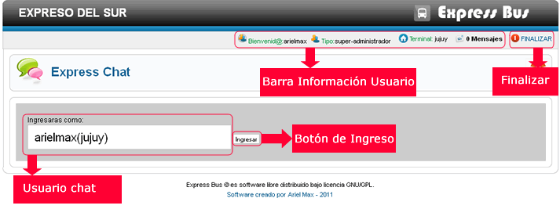
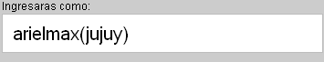
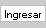

Ayuda Express Chat
Contenido:
Vista General
Express Chat te permite cominicarte en tiempo real con otros usuarios del sistema atravez del chat on line.
Barra de Información Usuario

La barra de información usuario nos muestra la información del usuario Logeado, también nos permite tener acceso directo a mensajes provenientes de otros usuarios del sistema.
Finalizar
Este botón nos permite finalizar sesión en el chat, es muy importante finalizar sesión, cuando ya no aremos uso del chat.
Usuario Chat
Nos muestra nuestro nombre de Usuario seguido de la terminal a la cual pertenesemos, esto sera nuestro nombre de usuario en el chat.
Botón de Ingreso
Este botón nos permite acceder a las salas de chat, una vez ingresado se registrara nuestra sesión, esta permanecera bierta asi que por seguridad si ya no se utilizara el chat es importante finalizar la sessión, presionando en botón Finalizar.